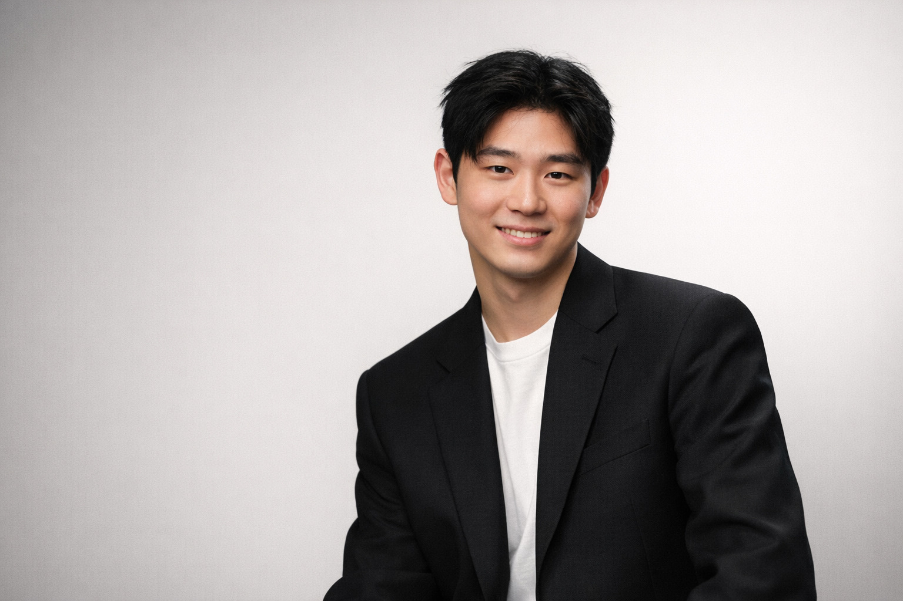

|
 Hengjian ZhangPhD CandidateMathematics, LSEH.Zhang93@lse.ac.uk |
Hello there! I am a PhD candidate in Financial Mathematics
at the Department of Mathematics,
London School of Economics and Political Science
.
I'm very lucky to be supervised by Professor
Mihail Zervos
.
Working papers
Teaching
Conferences
|
Mihail Zervos, Hengjian Zhang, "Long-run portfolio optimisation in the presence of proportional transaction costs: equivalent risk-sensitive and robust formulations". Planned for submission to Finance and Stochastics shortly.
Mihail Zervos, Hengjian Zhang, "Tracking a Target Moving Randomly on a Line". Planned for submission to Applied Mathematics & Optimization in the near future.
Mihail Zervos, Hengjian Zhang, "Entropy Regularised Randomised Singular Control and Reinforcement Learning". Ongoing.
Philippe Bergault, Leandro Sánchez-Betancourt, Hengjian Zhang, "Automated Market Maker Portfolio Management with External Hedging". Ongoing.
Autumn 2024 : MA213 Operation Research
Autumn 2023 : MA107 Quantitative Methods (Mathematics)
Winter 2023 : ST107 Quantitative Methods (Statistics)
22nd Winter school on Mathematical Finance, Netherlands, 2025
London Mathematical Finance PhD Day, United Kingdom, 2025
Applied Mathematics Postgraduate Conference, United Kingdom, 2024